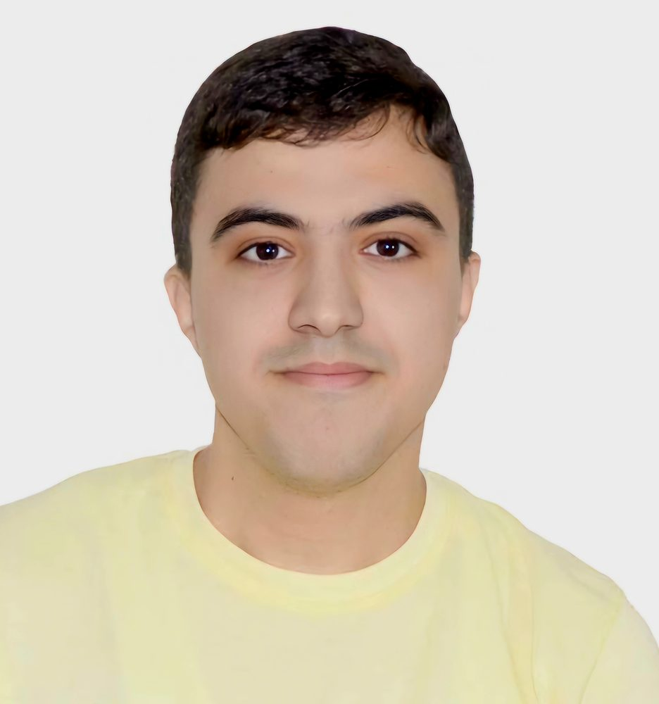
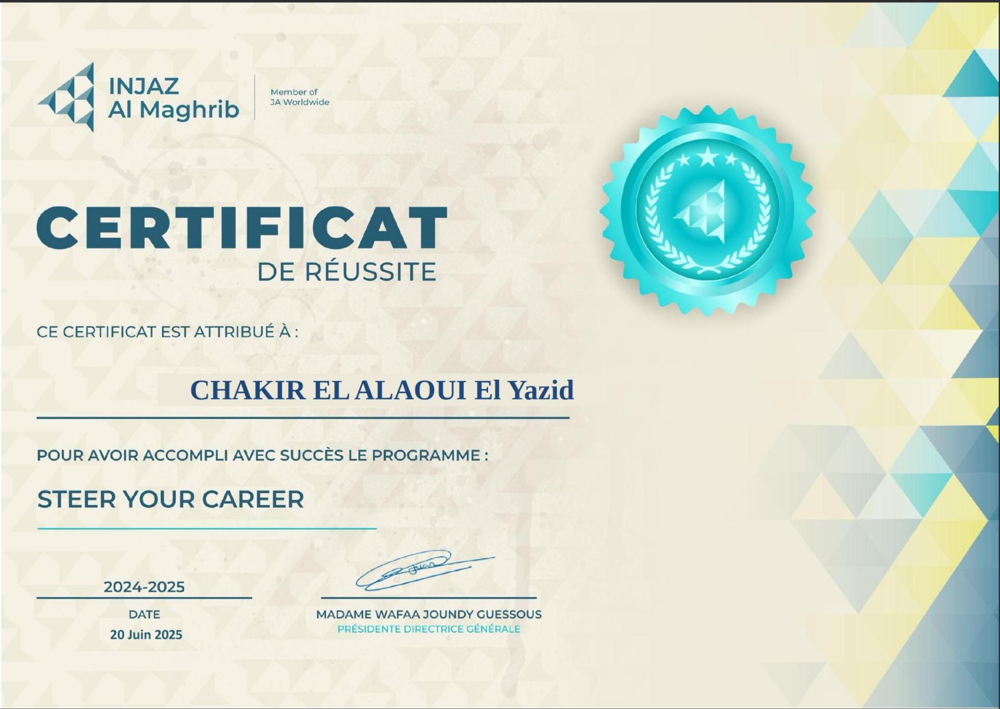
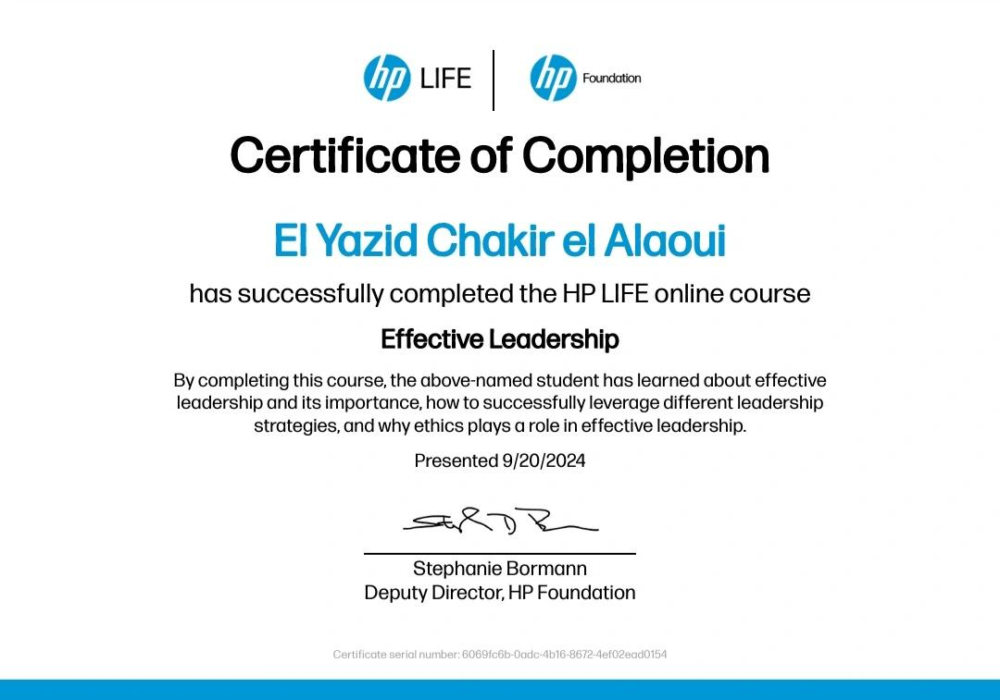
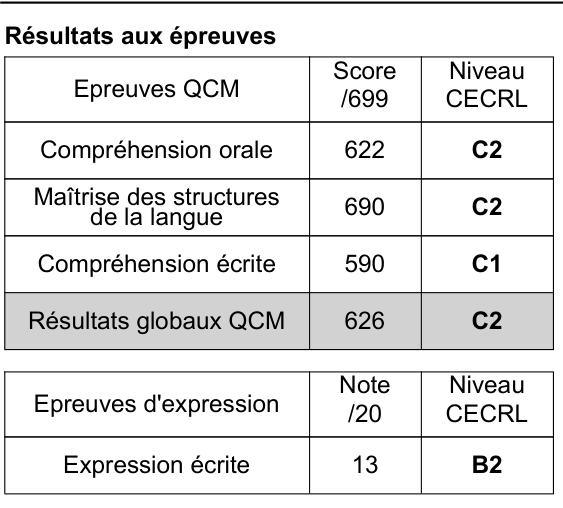

El Yazid
Chakir El Alaoui
Admis en Master MIAGE en alternance · ISTIC Université de Rennes · Développeur Full Stack Java / React passionné par l'informatique et les SI

À propos
Admis en Master MIAGE en alternance à l'ISTIC – Université de Rennes, après une L3 MIAGE et une Licence en Génie Informatique de la Faculté des Sciences et Techniques de Fès. Cette double formation me donne une vision technique et métier solide.
Je viens de terminer un stage chez ChilloTech (Rennes) où j'ai développé une plateforme SaaS de qualification de leads avec Java 21, Spring Boot 3, MongoDB, Spring AI et Next.js 16. Je suis ouvert à tout poste IT : développement, data, gestion de projet SI ou analyse fonctionnelle.
Compétences
Stack principal pratiqué quotidiennement lors de mon stage chez ChilloTech (avril – juin 2026)
Projets
ScoreUsers — Plateforme SaaS de Qualification de Leads
Développement complet d'une plateforme SaaS pour la qualification automatisée de profils via questionnaires intelligents et scoring IA (GPT-4). Intégration Kit.com, webhooks, séquences de nurturing, tests unitaires JUnit 5 + Mockito.
Plateforme Tourisme Multi-Acteurs
Application web complète dédiée au tourisme au Maroc — clients, prestataires, administrateurs. Découverte, réservation, workflows de validation, notifications in-app & email, tableau de bord statistiques. Réalisé chez ABIsoft, Fès.
Plateforme de Gestion des Visites Pédagogiques
Application web de suivi des visites de tuteurs auprès des étudiants en alternance. Auth sécurisée, CRUD étudiants, planification des visites, comptes-rendus avec export PDF. Environnement Dockerisé.
EasyMake — Démarches Étudiantes
Conception d'une startup digitale visant à simplifier les démarches administratives des étudiants en France. Analyse des besoins, architecture, structure SAS, conformité RGPD, roadmap, stratégie marketing.
Gestion des Manifestations Scientifiques
Application dédiée à l'organisation de conférences académiques de l'USMBA : création d'événements, soumission et évaluation d'articles, coordination des comités scientifiques. Architecture logicielle complète modélisée en UML.
Voiture Robot Autonome — Arduino
Conception et programmation d'une voiture robotisée à navigation autonome avec évitement d'obstacles via capteur à ultrasons. Intégration de moteurs, capteurs et composants électroniques sur carte Arduino.
Expériences
- Développé des fonctionnalités sur ScoreUsers, une plateforme SaaS de qualification de leads par questionnaires intelligents et scoring IA
- Backend : Spring Boot 3, MongoDB, Spring Security, Spring AI (GPT-4)
- Frontend : Next.js 16, TypeScript, Tailwind CSS
- Intégré des services tiers : Kit.com (newsletter), webhooks, séquences de nurturing IA
- Rédigé des tests unitaires JUnit 5 + Mockito, collaboration via Git/GitHub
- Travail en autonomie, supervision par Achille MBOUGUENG (fondateur)
- Conception & développement d'une plateforme web multi-acteurs (tourisme au Maroc)
- Architecture multi-couches, API REST sécurisée, gestion des rôles et workflows
- Système de notifications in-app & email, tableau de bord administrateur avec statistiques
- Modélisation UML complète, tests fonctionnels, documentation technique
Formation
- Master MIAGE en contrat d'alternance — rythme école / entreprise
- Parcours visé : DLIS / DABI (architectures décisionnelles, ingénierie des SI)
- Recherche d'une entreprise d'accueil pour la rentrée 2026
- Méthodes Informatiques Appliquées à la Gestion des Entreprises
- Développement web, bases de données, gestion de projet SI, droit des entreprises
- Algorithmique, programmation C/C++/Java, bases de données, réseaux
- Projet de fin de Licence : développement web full stack
- Mention obtenue avec spécialité sciences
Certifications



Contact
Travaillons ensemble.
Ouvert à tout échange en lien avec l'informatique — développement Full Stack, data, gestion de projet SI ou analyse fonctionnelle. N'hésitez pas à me contacter directement.
→ Envoyer un email